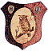
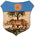

|

La Comparsa di questo Palio era formata soltanto dalle 10 Contrade partecipanti alla corsa ed era composta dal Duce (o Capitano come appare nei fogli prestampati del Comune), un solo Alfiere, il Tamburino, il Barberesco e quattro Paggi.

 AQUILA AQUILA
Duce - Ricci Agostino, via dei Pispini
Alfiere - Tacchetti Alessandro
Barberesco - Tozzini Alfredo
Tamburo - Vigni Zaverio (Saverio)
Paggio - Lamioni Giuseppe
Paggio - Sacchi (illeggibile)
Paggio - Paolini Ferdinando
Paggio - Palazzi Modesto
 CIVETTA
Duce - Picchiai Torello
Alfiere - Ricci Angelo, via di Salicotto
Barberesco - Merci Bernardino
Tamburo - Meini Sestilio, via dei Pispini 11
Paggio - Testi Emilio, via Vallerozzi
Paggio - Vannini Giuseppe, via Vallerozzi
Paggio - Sestigiani Giuseppe, via del Refe Nero
Paggio - Farsi Amelio, via dei Rossi
 GIRAFFA GIRAFFA
Duce - Santini Angelo, via Salicotto
Alfiere - Silei G.Battista
Barberesco - Stacchini Giacomo
Tamburo - Magnelli Francesco
Paggio - Pruneti Ferdinando
Paggio - Fabbri Ernesto
Paggio - Mazzoni Torquato
Paggio - Mori Arturo
 ISTRICE ISTRICE
Duce - Cappelli Giuseppe, via Salicotto
Alfiere - Bruchi Domenico, via Camollia
Barberesco - Danti Cesare, via Camollia
Tamburo - Vannini Agostino, via Camollia
Paggio - Rinaldi Federigo, via Camollia
Paggio - Piazzesi Dante, via Camollia
Paggio - Fabbri Giuseppe, via Camollia
Paggio - Neri Vittorio, via Camollia
 LEOCORNO LEOCORNO
Duce - Bacconi Egisto, via S.Chiara 3
Alfiere - Viligiardi Giulio, via Salicotto
Barberesco - Gori Smeraldo, via S.Vigilio 9
Tamburo - Bellaccini Silvio, via Salicotto
Paggio - Olmastoni Massimo, via dei Pispini
Paggio - Neri Alfredo, via del Comune 49
Paggio - Caprioli Pietro, via dei Pispini
Paggio - Campolini (Ciampolini) Eugenio, via di Finimondo
 NICCHIO NICCHIO
Duce - Lorenzetti Baldassare, via S.Bandini 6
Alfiere - Pozzuoli Sabatino, via dell'Oliviera 10
Barberesco - Formichi Alfredo, via dei Pispini 8
Tamburo - Ricci Raffaello, via S.Marco 36
Paggio - Nocieti (Noceti) Domenico, via Vallerozzi 40
Paggio - Nencini Cesare, via dei Pispini 9
Paggio - Fanetti Giulio, via Salicotto 14
Paggio - Cantagalli Cesare, via dei Pispini 42
 OCA OCA
Duce - Boninsegni Antonio, via dei Pittori 6
Alfiere - Pacini Gaetano, via Benicasa 24
Barberesco - Tancredi Pietro, via dei Pittori 8
Tamburo - Marzi Eugenio, via Benincasa 23
Paggio - Lotti Nazzareno, via del Tiratoio 17
Paggio - Cambi Pietro, via dei Pittori 4
Paggio - Donati Galileo, via Benincasa 23
Paggio - Nesi Vittorio, fuori Porta Fontebranda
 ONDA ONDA
Duce - Montaini Giulio (fabbro ferraio), via Duprè
Alfiere - Silei Angelo
Barberesco - Giorgi Giovanni
Tamburo - Lorenzetti Alfredo
Paggio - Bianciardi Giovanni
Paggio - Staderini Alfredo
Paggio - Bussagli Dante
Paggio - Rogani Egisto
 SELVA
Duce - Mancianti Natale, via Franciosa 11
Alfiere - Palagi Vitaliano, via Franciosa 30
Barberesco - Pegni Agostino, via della Macina 1
Tamburo - n.r.
Paggio - Dinelli Luigi, vicolo di S.Girolamo 3
Paggio - Capannoli Cesare, via Valle Piatta 53
Paggio - Lotti Ugo, via S.Marco 25
Paggio - Guideri Giuseppe, vicolo di S.Girolamo
 TARTUCA TARTUCA
Duce - Cortecci Errico (calzolaio), via degli Orbachi 3
Alfiere - Tozzi Cesare (fornaio), via Duprè 34
Barberesco - Cannoni Modesto (calzolaio), via Stalloreggi 31
Tamburo - Goretti Carlo (legnaiolo), via T.Pendola 19
Paggio - Pericciuoli Giulio (fabbro), via Fontanella 17
Paggio - Turillazzi Giovanni (fabbro), via Castelvecchio 3
Paggio - Marzucchi Celso (legnaiolo), via S.Antonio 1
Paggio - Fedi Giuseppe (legnaiolo), via dei Maestri(attuale via Tito Sarrocchi) 17

Archivio Storico del Comune di Siena - Postunitario X.A - Cat.X - 0015
|